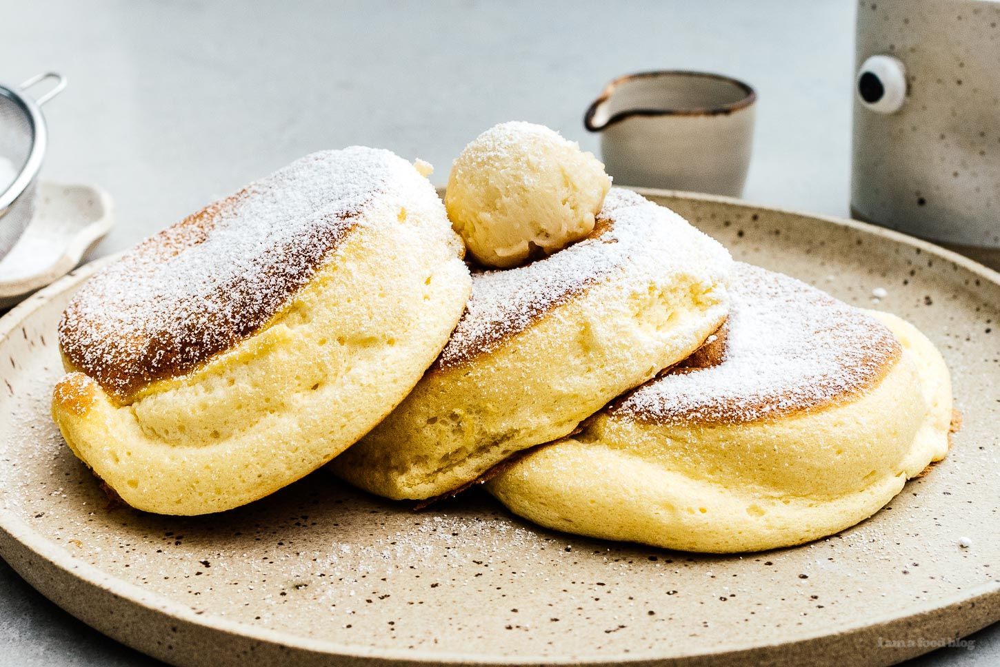

Japanese Souffle Pancakes

Fluffy like a cloud
These fluffy and extra-thick Japanese pancakes are mouthwatering! They are soft and spongy, and a true indulgence.
Ingredients
- 1 cup of milk
- 1 tablespoon of white vinegar
- 1 cup of all-purpose flour
- 1/4 cup of white sugar
- 2 teaspoons of baking powder
- 2 large eggs, separated
- 1/4 teaspoon vanilla extract
- 1 tablespoon of butter
Directions
- Combine milk and vinegar in a large bowl. Allow to sit until milk has soured, about 5 minutes.
- Meanwhile, sift together flour, sugar, and baking powder in a separate bowl; set aside.
- Beat egg whites in a glass, metal, or ceramic bowl with an electric mixer until stiff peaks form.
- Add egg yolks and vanilla extract to the soured milk; mix until well combined and pour into the center of the
flour mixture. Use a whisk to combine all ingredients. Fold in
egg whites.
- Heat a griddle on the stovetop over medium-low heat and melt butter. Grease round pancake molds and place onto
the buttered griddle. Fill each mold halfway with batter. Cook until pancakes are golden brown on the bottom and
not too liquid across the top, 4 to 6 minutes. Flip each pancake and mold together. Cook until the other sides
are golden and pancakes have doubled in thickness, 4 to 6 more minutes. Slide the molds off the pancakes.